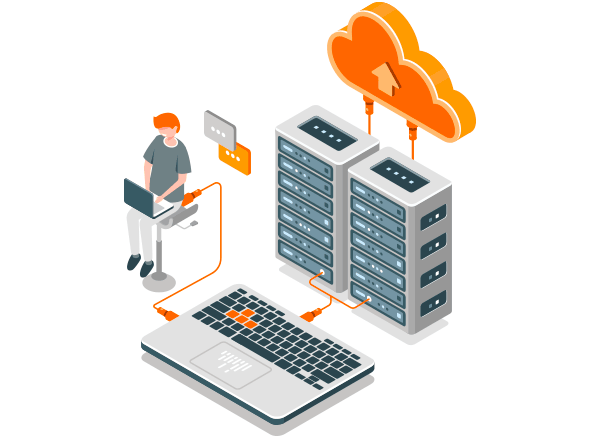

Recursos

Raspberry
Gestionaremos un servidor propio con este mini ordenador
ya que resalta más asequible que un sistema NAS preinstalado.
En la parte de energetica es mucha más baja debido a que raspberry
no requiere de diversos requisitos. Además, es compacto y portable.

Servidores
Simularemos un aparato informático que almacena y distribuye datos
al servicio de otros ordenadores en función de los comandos de nuestra
placa asignada.